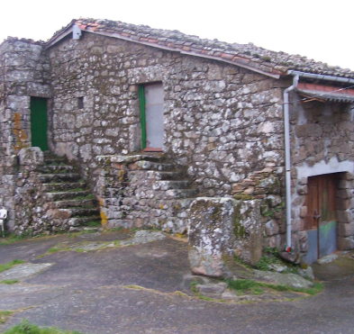

Manuel Teijeiro
1800 - 1900Un poco de historia
En una casa rústica, anclada entre colinas, una familia tejía su vida. El padre, arriero audaz, comerciaba café entre fronteras. En la penumbra de la madrugada, sus mulas cargadas se deslizaban por senderos secretos entre España y Portugal. La madre, con destreza, entretejía hilos de historias en susurros, guardando secretos como joyas. Los hijos crecían en la complicidad del silencio.
La vieja morada, testigo silente, guardaba susurros de tiempos ilícitos. Sus paredes guardaban susurros de contrabando y complicidades. Aquella casa, con su pasado clandestino, se convertía en un relicario de memorias prohibidas y valentías calladas.